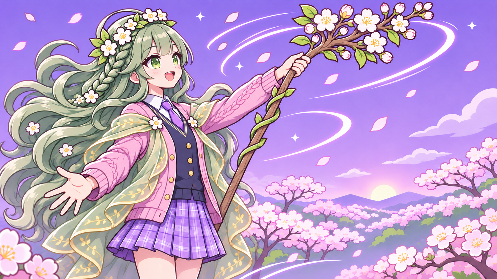
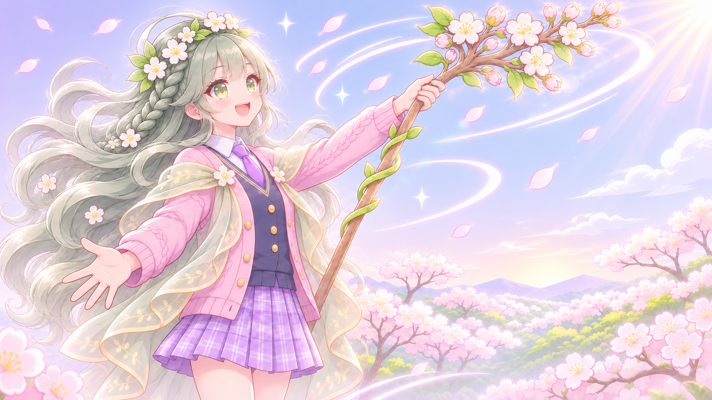

지금 SD에 가까운 비율
지금 게임에 들어 있는 플로라 컷인 그림입니다.

A · 일반 비율 해 질 녘
같은 장면 · 같은 구도를 일반 비율(약 6등신)로 다시 그린 것입니다. 하늘은 지금처럼 저녁 보랏빛입니다.

B · 일반 비율 + 화사하게 봄 아침
A를 더 화사하게: 맑은 파스텔 하늘, 오른쪽 위에서 쏟아지는 햇살과 번짐, 머리카락 · 카디건 테두리빛, 더 선명한 벚꽃 분홍과 잎 초록, 반짝임을 더했습니다.

C · 첨부 그림체 가는 선 · 밝은 파스텔
B와 같은 장면 · 구도에 그림체만 바꿨습니다: 검은 굵은 테두리 대신 가는 갈색 · 색 선, 하얀빛이 많은 밝은 파스텔, 부드럽게 번지는 그림자, 결이 살아 있는 머리카락과 잔머리, 빛이 겹친 큰 눈.

나란히 · B ↔ C
나란히 · 지금 ↔ C
그림 원본 (UI 없음)


